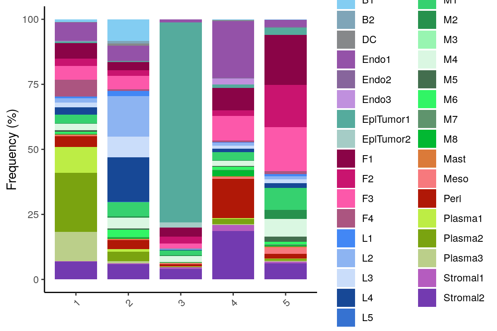
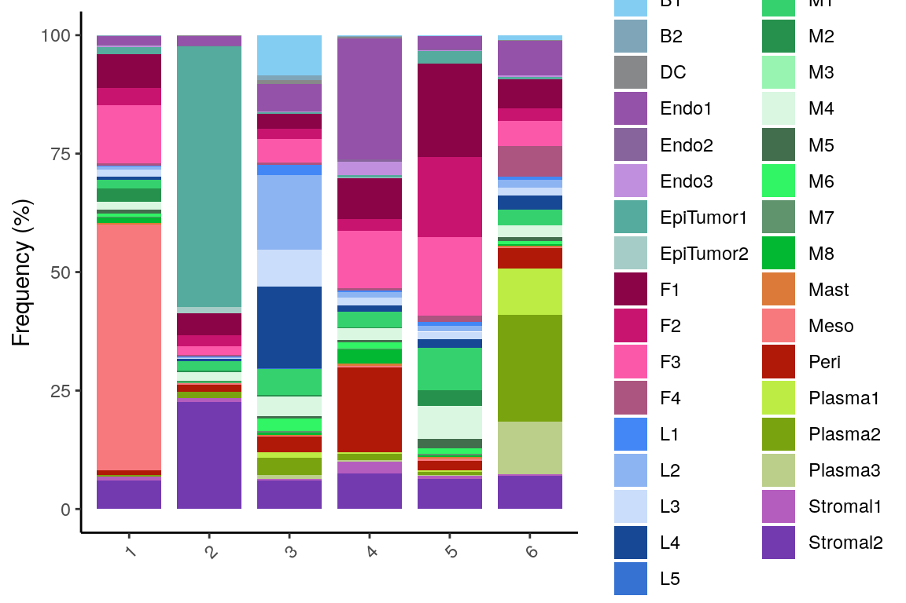
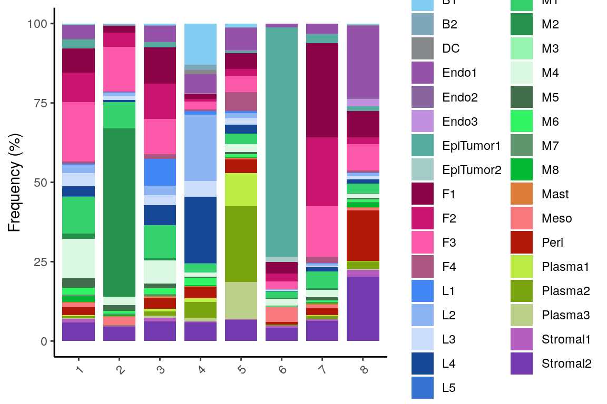
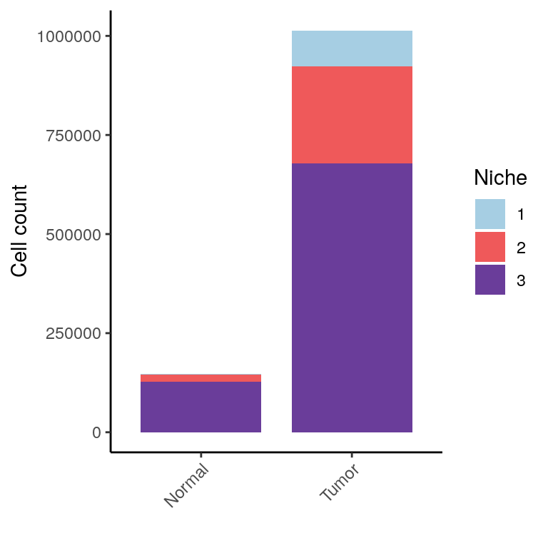
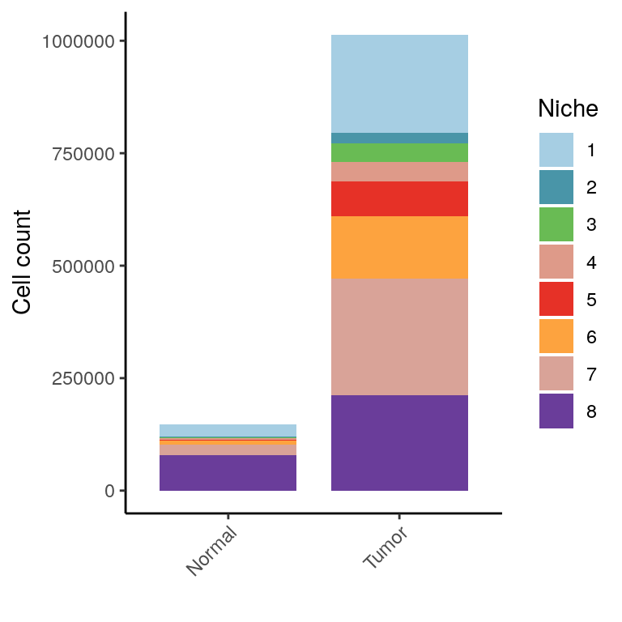
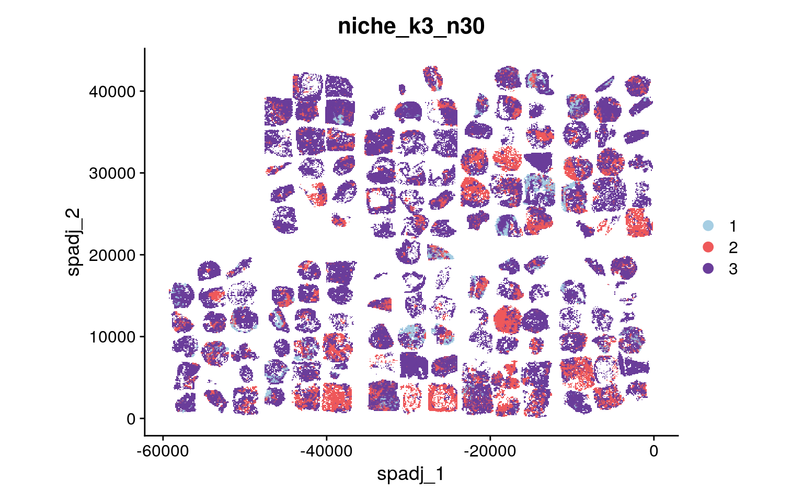

Niche construction and analysis of PIPAC Xenium data
heinin
2025-02-11
Last updated: 2025-04-02
Checks: 5 2
Knit directory: PIPAC_spatial/
This reproducible R Markdown analysis was created with workflowr (version 1.7.1). The Checks tab describes the reproducibility checks that were applied when the results were created. The Past versions tab lists the development history.
The R Markdown file has unstaged changes. To know which version of
the R Markdown file created these results, you’ll want to first commit
it to the Git repo. If you’re still working on the analysis, you can
ignore this warning. When you’re finished, you can run
wflow_publish to commit the R Markdown file and build the
HTML.
Great job! The global environment was empty. Objects defined in the global environment can affect the analysis in your R Markdown file in unknown ways. For reproduciblity it’s best to always run the code in an empty environment.
The command set.seed(20240917) was run prior to running
the code in the R Markdown file. Setting a seed ensures that any results
that rely on randomness, e.g. subsampling or permutations, are
reproducible.
Great job! Recording the operating system, R version, and package versions is critical for reproducibility.
Nice! There were no cached chunks for this analysis, so you can be confident that you successfully produced the results during this run.
Using absolute paths to the files within your workflowr project makes it difficult for you and others to run your code on a different machine. Change the absolute path(s) below to the suggested relative path(s) to make your code more reproducible.
| absolute | relative |
|---|---|
| /home/hnatri/PIPAC_spatial/ | . |
| /home/hnatri/PIPAC_spatial/code/PIPAC_colors_themes.R | code/PIPAC_colors_themes.R |
| /home/hnatri/PIPAC_spatial/code/plot_functions.R | code/plot_functions.R |
Great! You are using Git for version control. Tracking code development and connecting the code version to the results is critical for reproducibility.
The results in this page were generated with repository version 281c5e5. See the Past versions tab to see a history of the changes made to the R Markdown and HTML files.
Note that you need to be careful to ensure that all relevant files for
the analysis have been committed to Git prior to generating the results
(you can use wflow_publish or
wflow_git_commit). workflowr only checks the R Markdown
file, but you know if there are other scripts or data files that it
depends on. Below is the status of the Git repository when the results
were generated:
Ignored files:
Ignored: .RData
Ignored: celltype_markers.tsv
Ignored: immune_cluster_marker_annotations.tsv
Ignored: immune_cluster_marker_annotations_2ndpass.tsv
Ignored: main_cluster_marker_annotations.tsv
Ignored: nonimmune_cluster_marker_annotations.tsv
Ignored: nonimmune_cluster_marker_annotations_2ndpass.tsv
Untracked files:
Untracked: MR_PIPACTMA3-Rerun_highres.png
Untracked: Rplots.pdf
Untracked: analysis/arm2_comparative_analysis.Rmd
Untracked: analysis/arm3_DEGs.Rmd
Untracked: analysis/arm3_comparative_analysis.Rmd
Untracked: analysis/arm3_niche_comparison.Rmd
Untracked: analysis/feature_expression.Rmd
Untracked: analysis/niche_construction_n20.Rmd
Untracked: analysis/pca_variance_decomp.Rmd
Untracked: annotation_dimplot.pdf
Untracked: code/construct_niches.R
Untracked: code/construct_niches.Rout
Untracked: code/plot_metadata.R
Untracked: code/plot_save_pdf.R
Untracked: code/run_rscript.sh
Untracked: code/slurm.19006190.err
Untracked: code/slurm.19006190.out
Untracked: code/update_metadata.R
Untracked: code/vardecomp.R
Untracked: coh004.pdf
Untracked: demographics_grid.pdf
Untracked: output/outputFile-Meanplot.pdf
Untracked: output/outputFile-Variance.csv
Untracked: output/outputFile-VarianceExplained-Boxplot.pdf
Untracked: output/scrna-Meanplot.pdf
Untracked: output/scrna-Variance.csv
Untracked: output/scrna-VarianceExplained-Boxplot.pdf
Untracked: output/vardecomp.tsv
Untracked: tissue_celltypeprop_scatter.pdf
Unstaged changes:
Modified: analysis/add_metadata.Rmd
Modified: analysis/annotation_2nd_pass.Rmd
Modified: analysis/index.Rmd
Modified: analysis/niche_construction.Rmd
Modified: analysis/plot_by_group.Rmd
Modified: analysis/splitting_samples.Rmd
Modified: code/PIPAC_colors_themes.R
Note that any generated files, e.g. HTML, png, CSS, etc., are not included in this status report because it is ok for generated content to have uncommitted changes.
These are the previous versions of the repository in which changes were
made to the R Markdown (analysis/niche_construction.Rmd)
and HTML (docs/niche_construction.html) files. If you’ve
configured a remote Git repository (see ?wflow_git_remote),
click on the hyperlinks in the table below to view the files as they
were in that past version.
| File | Version | Author | Date | Message |
|---|---|---|---|---|
| Rmd | fae8c8a | heinin | 2025-02-18 | Added annotations and basic analysis |
| html | fae8c8a | heinin | 2025-02-18 | Added annotations and basic analysis |
| Rmd | 6448204 | heinin | 2025-02-18 | Added annotations |
Load packages
suppressPackageStartupMessages({
library(workflowr)
library(arrow)
library(Seurat)
library(SeuratObject)
library(SeuratDisk)
library(tidyverse)
library(tibble)
library(ggplot2)
library(ggpubr)
library(ggrepel)
library(googlesheets4)
library(workflowr)
library(patchwork)})Environment variables and helper functions
setwd("/home/hnatri/PIPAC_spatial/")
set.seed(9999)
options(future.globals.maxSize = 30000 * 1024^2)
options(scipen = 99999)
options(ggrepel.max.overlaps = Inf)
source("/home/hnatri/PIPAC_spatial/code/PIPAC_colors_themes.R")
source("/home/hnatri/PIPAC_spatial/code/plot_functions.R")Import data
seurat_data <- readRDS("/tgen_labs/banovich/PIPAC/Seurat/PIPAC_NC50_NN20_PC20_Seurat_annotated_metadata_niches.rds")Niche construction
See /code/construct_niches.R
Plotting niche composition
plot_list <- lapply(seq(3, 8), function(niche){
niche_column <- paste0("niche_k", niche, "_n30")
niches <- seq(1, niche)
seurat_data@meta.data[,niche_column] <- factor(seurat_data@meta.data[,niche_column],
levels = niches)
create_barplot(seurat_data,
group_var = niche_column,
plot_var = "Annotation",
group_levels = niches,
plot_levels = sort(unique(seurat_data$Annotation)),
plot_colors = pipac_celltype_col,
var_names = c("Frequency (%)", ""),
legend_title = "Cell type")
})
plot_list[[1]]
[[2]]
[[3]]
[[4]]
[[5]]
[[6]]
Plotting by tissue
plot_list <- lapply(seq(3, 8), function(niche){
niche_column <- paste0("niche_k", niche, "_n30")
ct_table <- as.data.frame(table(seurat_data@meta.data[, niche_column], seurat_data$Tissue))
colnames(ct_table) <- c("Niche", "Tissue", "Freq")
ct_table <- spread(ct_table, Niche, Freq)
# Converting to percetange
#ct_table[,2:length(ct_table)] <- (ct_table[,2:length(ct_table)]/rowSums(ct_table[,2:length(ct_table)]))*100
ct_table <- gather(ct_table, Niche, Freq, names(ct_table)[2:length(names(ct_table))], factor_key=TRUE)
ct_table$Tissue <- factor(ct_table$Tissue, levels = c("Normal", "Tumor"))
niches <- seq(1, niche)
niches <- factor(niches, levels = niches)
#niches <- sort(unique(seurat_data@meta.data[, niche_col]))
niche_col <- colorRampPalette(brewer.pal(10, "Paired"))(nb.cols <- length(niches))
names(niche_col) <- levels(niches)
ggplot(ct_table, aes(x = Tissue, y = Freq, fill = Niche)) +
geom_bar(stat="identity", position='stack', width = 0.8) +
scale_fill_manual(name = "Niche", values = niche_col) +
xlab("") +
ylab("Cell count") +
theme_classic() +
theme(axis.text.x = element_text(angle = 45, vjust = 1, hjust=1))
})
plot_list[[1]]
| Version | Author | Date |
|---|---|---|
| fae8c8a | heinin | 2025-02-18 |
[[2]]
[[3]]
[[4]]
[[5]]
[[6]]
Plotting by sample
plot_list <- lapply(seq(3, 8), function(niche){
niche_column <- paste0("niche_k", niche, "_n30")
niches <- seq(1, niche)
seurat_data@meta.data[,niche_column] <- factor(seurat_data@meta.data[,niche_column],
levels = niches)
niche_col <- colorRampPalette(brewer.pal(10, "Paired"))(nb.cols <- length(niches))
names(niche_col) <- levels(niches)
create_barplot(seurat_data,
plot_var = niche_column,
group_var = "Sample",
plot_levels = niches,
group_levels = sort(unique(seurat_data$Sample)),
plot_colors = niche_col,
var_names = c("Frequency (%)", ""),
legend_title = "Niche")
})
plot_listPlotting by sample, Arm 3 tumors only
arm3 <- subset(seurat_data, subset = Arm == "Arm3" &
Tissue == "Tumor")
plot_list <- lapply(seq(3, 8), function(niche){
niche_column <- paste0("niche_k", niche, "_n30")
niches <- seq(1, niche)
arm3@meta.data[,niche_column] <- factor(arm3@meta.data[,niche_column],
levels = niches)
niche_col <- colorRampPalette(brewer.pal(10, "Paired"))(nb.cols <- length(niches))
names(niche_col) <- levels(niches)
create_barplot(arm3,
plot_var = niche_column,
group_var = "Sample",
plot_levels = niches,
group_levels = sort(unique(arm3$Sample)),
plot_colors = niche_col,
var_names = c("Frequency (%)", ""),
legend_title = "Niche")
})
plot_list[[1]]
[[2]]
[[3]]
[[4]]
[[5]]
[[6]]Plotting by sample, Arm 3 tumor adjacent only
arm3 <- subset(seurat_data, subset = Arm == "Arm3" &
Tissue == "Normal")
plot_list <- lapply(seq(3, 8), function(niche){
niche_column <- paste0("niche_k", niche, "_n30")
niches <- seq(1, niche)
arm3@meta.data[,niche_column] <- factor(arm3@meta.data[,niche_column],
levels = niches)
niche_col <- colorRampPalette(brewer.pal(10, "Paired"))(nb.cols <- length(niches))
names(niche_col) <- levels(niches)
create_barplot(arm3,
plot_var = niche_column,
group_var = "Sample",
plot_levels = niches,
group_levels = sort(unique(arm3$Sample)),
plot_colors = niche_col,
var_names = c("Frequency (%)", ""),
legend_title = "Niche")
})
plot_list[[1]]
[[2]]
[[3]]
[[4]]
[[5]]
[[6]]Spatial plots of niches
plot_list <- lapply(seq(3, 8), function(niche){
niche_column <- paste0("niche_k", niche, "_n30")
niches <- seq(1, niche)
niches <- factor(niches, levels = niches)
#niches <- sort(unique(seurat_data@meta.data[, niche_col]))
niche_col <- colorRampPalette(brewer.pal(10, "Paired"))(nb.cols <- length(niches))
names(niche_col) <- levels(niches)
DimPlot(seurat_data,
group.by = niche_column,
cols = niche_col,
reduction = "sp_adj") +
coord_fixed()
})
plot_list[[1]]
[[2]]
[[3]]
[[4]]
[[5]]
[[6]]
sessionInfo()R version 4.3.0 (2023-04-21)
Platform: x86_64-pc-linux-gnu (64-bit)
Running under: Ubuntu 22.04.3 LTS
Matrix products: default
BLAS: /usr/lib/x86_64-linux-gnu/openblas-pthread/libblas.so.3
LAPACK: /usr/lib/x86_64-linux-gnu/openblas-pthread/libopenblasp-r0.3.20.so; LAPACK version 3.10.0
locale:
[1] LC_CTYPE=en_US.UTF-8 LC_NUMERIC=C
[3] LC_TIME=en_US.UTF-8 LC_COLLATE=en_US.UTF-8
[5] LC_MONETARY=en_US.UTF-8 LC_MESSAGES=en_US.UTF-8
[7] LC_PAPER=en_US.UTF-8 LC_NAME=C
[9] LC_ADDRESS=C LC_TELEPHONE=C
[11] LC_MEASUREMENT=en_US.UTF-8 LC_IDENTIFICATION=C
time zone: Etc/UTC
tzcode source: system (glibc)
attached base packages:
[1] grid stats graphics grDevices utils datasets methods
[8] base
other attached packages:
[1] ComplexHeatmap_2.18.0 viridis_0.6.3 viridisLite_0.4.2
[4] circlize_0.4.15 plyr_1.8.8 RColorBrewer_1.1-3
[7] patchwork_1.1.2 googlesheets4_1.1.0 ggrepel_0.9.3
[10] ggpubr_0.6.0 lubridate_1.9.2 forcats_1.0.0
[13] stringr_1.5.0 dplyr_1.1.2 purrr_1.0.2
[16] readr_2.1.4 tidyr_1.3.0 tibble_3.2.1
[19] ggplot2_3.4.2 tidyverse_2.0.0 SeuratDisk_0.0.0.9021
[22] Seurat_5.0.1 SeuratObject_5.0.2 sp_1.6-1
[25] arrow_12.0.0 workflowr_1.7.1
loaded via a namespace (and not attached):
[1] RcppAnnoy_0.0.20 splines_4.3.0 later_1.3.1
[4] cellranger_1.1.0 polyclip_1.10-4 fastDummies_1.7.3
[7] lifecycle_1.0.3 rstatix_0.7.2 doParallel_1.0.17
[10] rprojroot_2.0.3 globals_0.16.2 processx_3.8.1
[13] lattice_0.21-8 hdf5r_1.3.8 MASS_7.3-60
[16] backports_1.4.1 magrittr_2.0.3 plotly_4.10.2
[19] sass_0.4.6 rmarkdown_2.22 jquerylib_0.1.4
[22] yaml_2.3.7 httpuv_1.6.11 sctransform_0.4.1
[25] spam_2.9-1 spatstat.sparse_3.0-1 reticulate_1.29
[28] cowplot_1.1.1 pbapply_1.7-0 abind_1.4-5
[31] Rtsne_0.16 BiocGenerics_0.48.1 git2r_0.32.0
[34] S4Vectors_0.40.2 IRanges_2.36.0 irlba_2.3.5.1
[37] listenv_0.9.0 spatstat.utils_3.0-3 goftest_1.2-3
[40] RSpectra_0.16-1 spatstat.random_3.1-5 fitdistrplus_1.1-11
[43] parallelly_1.36.0 leiden_0.4.3 codetools_0.2-19
[46] tidyselect_1.2.0 shape_1.4.6 farver_2.1.1
[49] stats4_4.3.0 matrixStats_1.0.0 spatstat.explore_3.2-1
[52] googledrive_2.1.0 jsonlite_1.8.5 GetoptLong_1.0.5
[55] ellipsis_0.3.2 progressr_0.13.0 iterators_1.0.14
[58] ggridges_0.5.4 survival_3.5-5 foreach_1.5.2
[61] tools_4.3.0 ica_1.0-3 Rcpp_1.0.10
[64] glue_1.6.2 gridExtra_2.3 xfun_0.39
[67] withr_2.5.0 fastmap_1.1.1 fansi_1.0.4
[70] callr_3.7.3 digest_0.6.31 timechange_0.2.0
[73] R6_2.5.1 mime_0.12 colorspace_2.1-0
[76] scattermore_1.2 tensor_1.5 spatstat.data_3.0-1
[79] utf8_1.2.3 generics_0.1.3 data.table_1.14.8
[82] httr_1.4.6 htmlwidgets_1.6.2 whisker_0.4.1
[85] uwot_0.1.14 pkgconfig_2.0.3 gtable_0.3.3
[88] lmtest_0.9-40 htmltools_0.5.5 carData_3.0-5
[91] dotCall64_1.0-2 clue_0.3-64 scales_1.2.1
[94] png_0.1-8 knitr_1.43 rstudioapi_0.14
[97] rjson_0.2.21 tzdb_0.4.0 reshape2_1.4.4
[100] nlme_3.1-162 curl_5.0.1 cachem_1.0.8
[103] zoo_1.8-12 GlobalOptions_0.1.2 KernSmooth_2.23-21
[106] parallel_4.3.0 miniUI_0.1.1.1 pillar_1.9.0
[109] vctrs_0.6.5 RANN_2.6.1 promises_1.2.0.1
[112] car_3.1-2 xtable_1.8-4 cluster_2.1.4
[115] evaluate_0.21 cli_3.6.1 compiler_4.3.0
[118] rlang_1.1.1 crayon_1.5.2 future.apply_1.11.0
[121] ggsignif_0.6.4 labeling_0.4.2 ps_1.7.5
[124] getPass_0.2-4 fs_1.6.2 stringi_1.7.12
[127] deldir_1.0-9 assertthat_0.2.1 munsell_0.5.0
[130] lazyeval_0.2.2 spatstat.geom_3.2-1 Matrix_1.6-5
[133] RcppHNSW_0.5.0 hms_1.1.3 bit64_4.0.5
[136] future_1.32.0 shiny_1.7.4 highr_0.10
[139] ROCR_1.0-11 gargle_1.4.0 igraph_1.4.3
[142] broom_1.0.4 bslib_0.4.2 bit_4.0.5